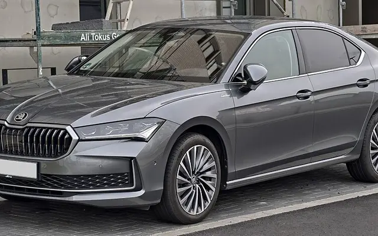

Par Motor › Precios por modelo › Skoda Superb
Precio de segunda mano · noviembre de 2026¿Cuánto vale un Skoda Superb de segunda mano?

Precio justo estimado de un Skoda Superb usado en España, año por año, con los kilómetros normales para su edad y en buen estado: de 9.900 € a 45.100 €. Para tasar el tuyo con sus kilómetros reales y su estado, usa el tasador gratis.
Precios del Skoda Superb por año
Superb II (2008–2015)
Precio de nuevo: 1.4 TSI 125 CV, 25.000 € · 2.0 TDI 170 CV, 30.000 € · 1.8 TSI 160 CV, 28.000 €
| Año | Km normales | 1.4 TSI 125 CV · Gasolina | 2.0 TDI 170 CV · Diésel | 1.8 TSI 160 CV · Gasolina |
|---|---|---|---|---|
| 2015 | 100.000 km | 14.000 € | 17.200 € | 15.700 € |
| 2014 | 100.000 km | 13.800 € | 16.200 € | 15.400 € |
| 2013 | 100.000 km | 13.200 € | 15.300 € | 14.800 € |
| 2012 | 100.000 km | 12.400 € | 14.500 € | 13.900 € |
| 2011 | 100.000 km | 11.700 € | 13.700 € | 13.200 € |
| 2010 | 100.000 km | 11.100 € | 12.900 € | 12.400 € |
| 2009 | 100.000 km | 10.500 € | 12.200 € | 11.700 € |
| 2008 | 100.000 km | 9.900 € | 11.500 € | 11.100 € |
La cadena de distribución se estira antes de tiempo y puede saltar un diente, con una avería muy cara. Un traqueteo metálico unos segundos al arrancar en frío es la señal de alarma. Desde 2013-2014 se montó otro motor con correa que no tiene este problema. Pregunta si ya se cambiaron la cadena y el tensor.
Consumo de aceite exagerado (hasta un litro cada mil kilómetros) por unos segmentos de pistón defectuosos. La reparación consiste en cambiar pistones y segmentos. Comprueba si ya se hizo y cuánto aceite gasta.
Superb III (2015–2023)
Precio de nuevo: 1.5 TSI 150 CV, 32.000 € · 2.0 TDI 150 CV, 35.000 € · iV (enchufable) 218 CV, 42.000 €
| Año | Km normales | 1.5 TSI 150 CV · Gasolina | 2.0 TDI 150 CV · Diésel | iV (enchufable) 218 CV · Híbrido enchufable |
|---|---|---|---|---|
| 2023 | 50.000 km | 26.100 € | 27.400 € | 30.800 € |
| 2022 | 65.000 km | 24.600 € | 23.800 € | 29.100 € |
| 2021 | 80.000 km | 22.300 € | 22.200 € | 26.400 € |
| 2020 | 95.000 km | 19.800 € | 22.400 € | 23.300 € |
| 2019 | 100.000 km | 18.900 € | 22.400 € | 22.300 € |
| 2018 | 100.000 km | 18.700 € | 22.400 € | 22.100 € |
| 2017 | 100.000 km | 18.500 € | 22.300 € | 21.800 € |
| 2016 | 100.000 km | 18.200 € | 21.200 € | 21.500 € |
| 2015 | 100.000 km | 18.000 € | 20.100 € | 21.200 € |
Superb IV (2024–hoy)
Precio de nuevo: 1.5 TSI 150 CV, 42.000 € · 2.0 TDI 193 CV, 45.000 € · iV (enchufable) 204 CV, 48.000 €
| Año | Km normales | 1.5 TSI 150 CV · Gasolina | 2.0 TDI 193 CV · Diésel | iV (enchufable) 204 CV · Híbrido enchufable |
|---|---|---|---|---|
| 2026 | 5.000 km | 43.800 € | 45.100 € | 45.000 € |
| 2025 | 20.000 km | 38.400 € | 39.500 € | 39.500 € |
| 2024 | 35.000 km | 36.200 € | 37.300 € | 37.300 € |
Kilómetros normales: 15.000 al año en gasolina, híbridos y eléctricos, y 20.000 en diésel, con un máximo de 100.000 km (por encima no tasamos: el precio depende demasiado del historial de cada coche). Cifras redondeadas a 100 €.
Preguntas frecuentes
¿Cuánto vale un Skoda Superb de segunda mano?
Según el año, la versión y los kilómetros, un Skoda Superb usado vale hoy de 9.900 € a 45.100 € en España. El más barato de nuestra tabla es un 1.4 TSI de 2008 (9.900 €) y el más caro un 2.0 TDI de 2026 (45.100 €). Son precios justos estimados entre particulares y profesionales, con los kilómetros normales para su edad y en buen estado.
¿Qué motorizaciones tiene el Skoda Superb?
En nuestra base de datos hay versiones gasolina, diésel y híbrido enchufable, en 3 generaciónes: Superb II, Superb III y Superb IV.
¿Qué motores del Skoda Superb dan problemas?
Ojo con el 1.2 y 1.4 TSI/TFSI de primera generación (cadena) (1.4 TSI, 2008–2013) y el 1.8 y 2.0 TFSI/TSI (consumo de aceite) (1.8 TSI, 2008–2012): son motores con fallos graves y muy extendidos. Antes de comprar uno, pide el historial de mantenimiento y comprueba si ya se hizo la reparación. El resto de motores no tiene problemas fuera de lo normal.
¿Cómo sé si me piden demasiado por un Skoda Superb?
Abre el tasador de Par Motor, elige el Skoda Superb, el año y los kilómetros reales, y escribe lo que te piden. Te diremos si está por debajo del precio justo (chollo) o por encima (caro). Es gratis y no pide registro ni matrícula.
Otros Skoda
Compara su coste real
El precio de compra es solo una parte. Mira cuánto te costaría al mes con combustible, seguro, neumáticos, mantenimiento y lo que pierde de valor.
Abrir el comparador →